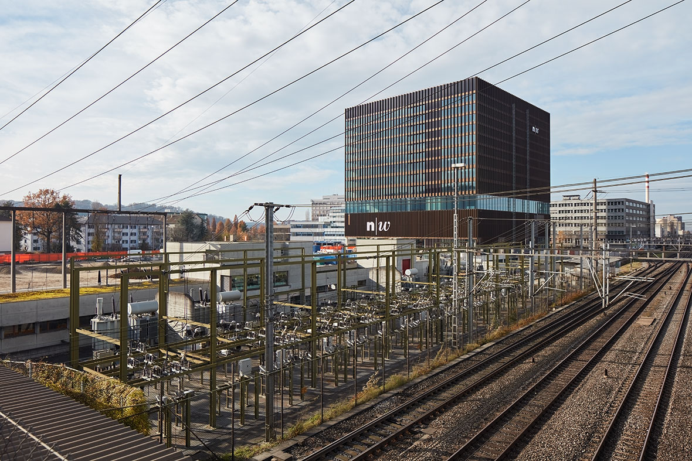
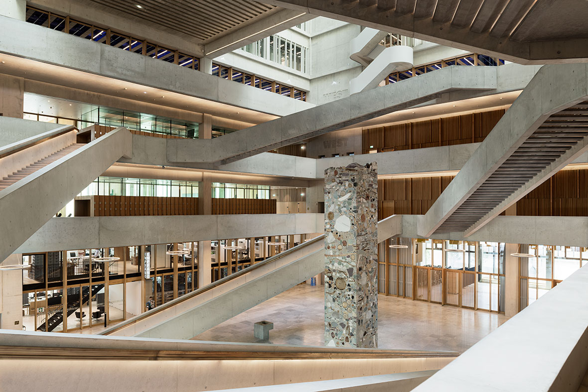
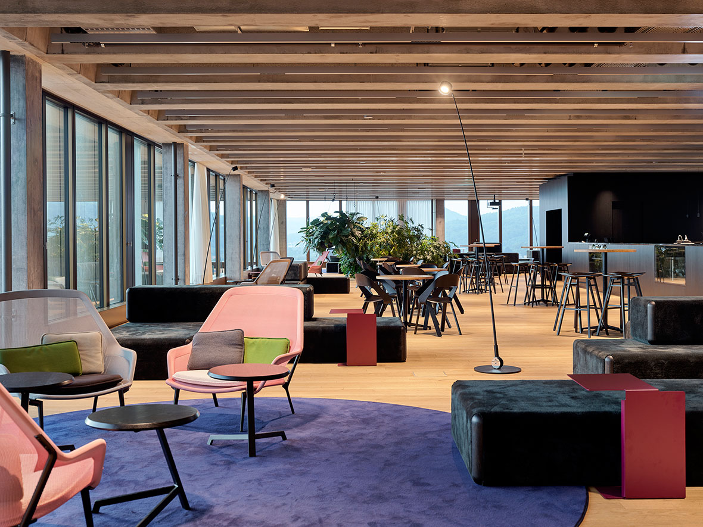

Stärker als anderswo setzen in der Stadtregion Basel die wichtigen öffentlichen Funktionen vertikale Akzente. Aus der Fernsicht zeigt sich dies in einer Stadtlandschaft, deren Pole die Bedeutung der Institutionen und das territoriale Bezugsnetz der Landmarks gleichermassen zum Ausdruck bringen. Der Neubau der FHNW gehört zu diesem Netz. In der Reihe der massigen Gewerbebauten am Muttenzer Gleisfeld bildet der kubische Baukörper einen dominanten Abschluss, ihm vorgelagert sind ein repräsentativer Platz und ein Park. Letzterer ist sowohl Empfangsraum für die Ankommenden als auch Erholungszone für Schule und Gemeinde.




Aus der Nahsicht erschliessen sich die Einzelheiten der gestapelten Nutzungen. Sockel, Eingangsgeschoss und Galerie, Unterrichtsgeschosse, Bibliothek, Labors, Hochschulgeschosse und Technikgeschoss zeichnen sich durch ihr Innenleben oder die Fassadendetaillierung diskret gegen aussen ab. Mit seinen über 60 Metern Höhe ist der Neubau der Fachhochschule faktisch – baurechtlich und technisch – ein Hochhaus, als Bautyp hingegen ein Hofhaus.



Um das Atrium gruppieren sich im Erdgeschoss Empfang und Aula, die Mensa sowie eine Cafeteria. Darüber liegt das Piano nobile als offen gehaltenes Bibliothekgeschoss, welches auch flexibel nutzbare Flächen für Seminare und studentisches Arbeiten anbietet. Als Beletage des Gebäudes, erschlossen durch sechs Treppen die das Atrium über drei Stockwerke kreuz und quer durchschneiden, überrascht es mit Weite und Transparenz.


Im ersten und zweiten Obergeschoss befinden sich moderne Hörsäle und Seminarräume für alle Hochschulen, perfekt ausgestattet für das tägliche Schulleben


Das zwölfte Stockwerk bietet als Abschluss, nebst weiteren Seminarräumen, eine Lounge mit grandiosem Weitblick sowie einen versteckten Dachgarten, der nur zum Himmel offen ist und Bilder eines Giardino segreto oder eines persischen Gartens wachwerden lässt.